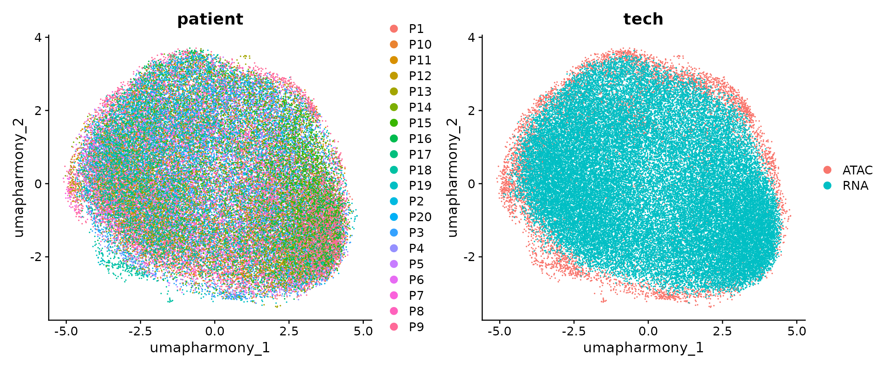
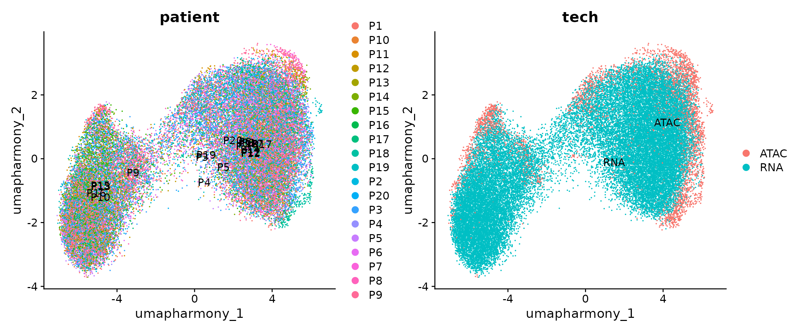
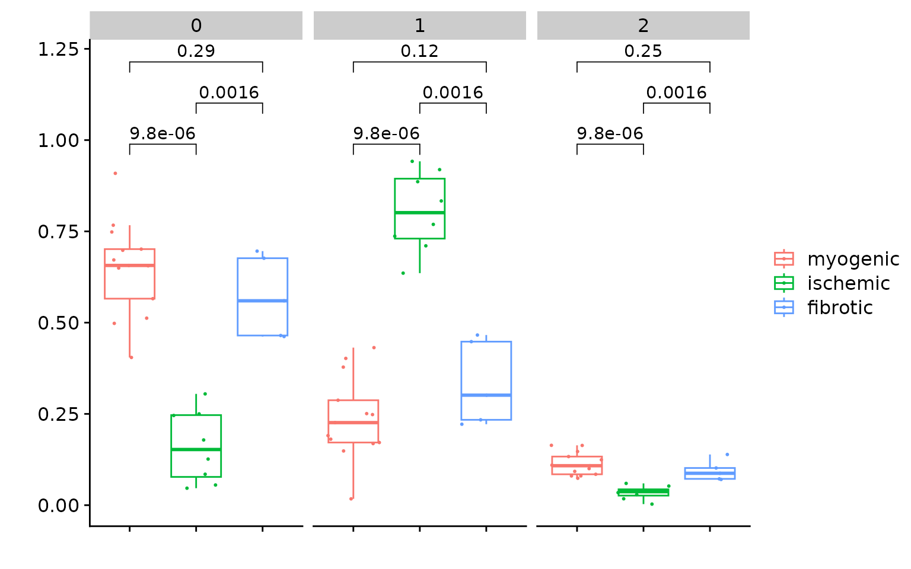
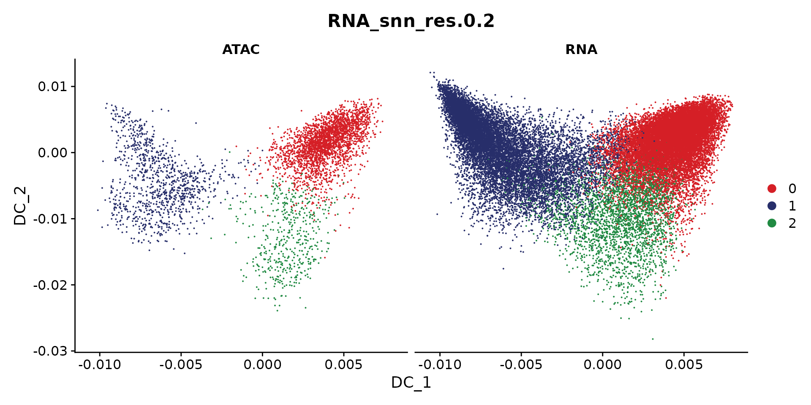
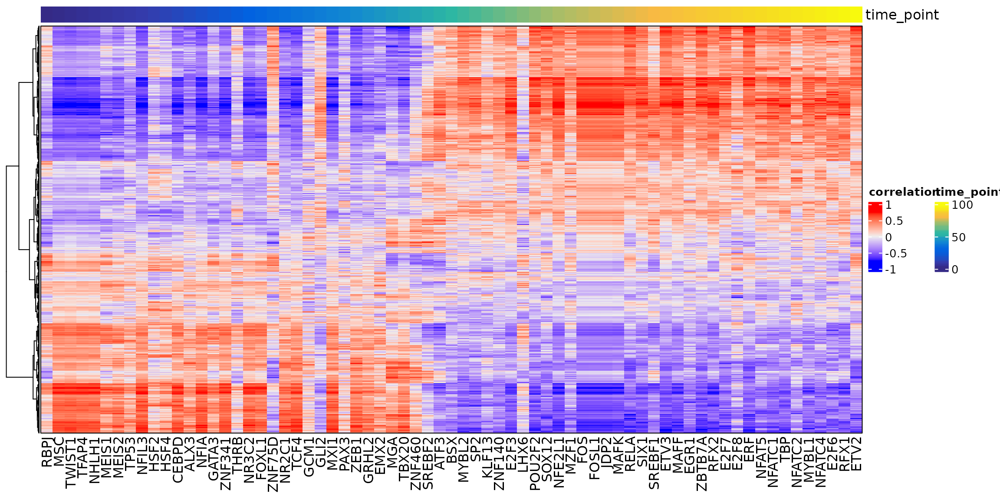

Gene-regulatory network of myofibroblast differentiation in myocardial infarction
Compiled: July 01, 2024
myofibroblast-GRN.RmdDuring this tutorial, we will integrate the snRNA-seq and snATAC-seq data generated from the human heart samples after myocardial infarction. The integrated data will be used as input for inferring gene regulatory network.
We first download the required data. In this case, we need two Seurat objects with each one corresponding to snRNA-seq and snATAC-seq respectively. The snRNA-seq object includes gene expression data of all fibroblasts and the snATAC-seq includes all chromatin accessibility profiles. Additionally, we also need a gene activity matrix for data integration. This matrix was estimated from the snATAC-seq data by using the ArchR package. The script of cleaning the data and preparing these objects is found here.
Run the following commands to download the data:
if(!dir.exists('./Fibroblast')){
dir.create('./Fibroblast')
}
download.file(url = 'https://costalab.ukaachen.de/open_data/scMEGA/Fibroblast/snRNA.rds',
destfile = './Fibroblast/snRNA.rds',
method = 'wget', extra = '--no-check-certificate')
download.file(url = 'https://costalab.ukaachen.de/open_data/scMEGA/Fibroblast/snATAC.rds',
destfile = './Fibroblast/snATAC.rds',
method = 'wget', extra = '--no-check-certificate')
download.file(url = 'https://costalab.ukaachen.de/open_data/scMEGA/Fibroblast/gene.activity.rds',
destfile = './Fibroblast/gene.activity.rds',
method = 'wget', extra = '--no-check-certificate')Next, we load all necessary packages:
suppressMessages(library(ArchR))
suppressMessages(library(Seurat))
suppressMessages(library(Signac))
suppressMessages(library(scMEGA))
suppressMessages(library(harmony))
suppressMessages(library(Nebulosa))
suppressMessages(library(ggplot2))
suppressMessages(library(dplyr))
suppressMessages(library(JASPAR2020))
suppressMessages(library(TFBSTools))
suppressMessages(library(igraph))
suppressMessages(library(ggraph))
suppressMessages(library(BSgenome.Hsapiens.UCSC.hg38))
options(future.globals.maxSize = 1e9)Data integration
Let’s load the data into memory and see how they look like
obj.rna <- readRDS("./Fibroblast/snRNA.rds")
obj.atac <- readRDS("./Fibroblast/snATAC.rds")
gene.activity <- readRDS("./Fibroblast/gene.activity.rds")We need to convert the assays to an Assay5 for Seuratv5
obj.rna[["RNA"]] <- as(obj.rna[["RNA"]], "Assay5")## Warning: Assay RNA changing from Assay to Assay5
obj.atac[["ATAC"]] <- as(obj.atac[["ATAC"]], "Assay5")## Warning: Assay ATAC changing from ChromatinAssay to Assay5
obj.rna## An object of class Seurat
## 28933 features across 45515 samples within 1 assay
## Active assay: RNA (28933 features, 2000 variable features)
## 3 layers present: data, counts, scale.data
## 4 dimensional reductions calculated: pca, harmony, umap, umap_harmony
obj.atac## An object of class Seurat
## 173843 features across 6481 samples within 1 assay
## Active assay: ATAC (173843 features, 0 variable features)
## 2 layers present: counts, data
## 3 dimensional reductions calculated: harmony, umap, umap_harmonyWe can observe that there are 45,515 and 6,481 cells in our snRNA-seq and snATAC-seq datasets. Let’s now visualize the data as colored by patients. Note that here we used the UMAP embedding generated from batch-corrected low-dimensional space so that no batch effects are observed from the 2D visualization.
p1 <- DimPlot(obj.rna, pt.size = 1, reduction = "umap_harmony") +
ggtitle("snRNA-seq")
p2 <- DimPlot(obj.atac, pt.size = 1, reduction = "umap_harmony") +
ggtitle("snATAC-seq")
p1 + p2Co-embedding
First, we need to project the data into a common low-dimensional space. This is done by using the CCA method from Seurat. To this end, we have wrapped several functions from Seurat into a single function CoembedData.
obj.coembed <- CoembedData(
obj.rna,
obj.atac,
gene.activity,
weight.reduction = "harmony",
verbose = FALSE
)## Find 19026 common genes between ATAC and RNA## Subset ATAC and RNA data## Normalize gene activity score for ATAC data## Performing data integration using Seurat...## Warning: Different features in new layer data than already exists for
## scale.data## Finding integration vectors## Finding integration vector weights## Transfering 19026 features onto reference data## Warning: Layer counts isn't present in the assay object; returning NULL## Coemebdding the data...## Centering data matrix## Warning: Different features in new layer data than already exists for
## scale.data## Warning: Different cells in new layer data than already exists for scale.data## Warning: The default method for RunUMAP has changed from calling Python UMAP via reticulate to the R-native UWOT using the cosine metric
## To use Python UMAP via reticulate, set umap.method to 'umap-learn' and metric to 'correlation'
## This message will be shown once per sessionWe next visualize the snRNA-seq and snATAC-seq in this shared UMAP space. The cells are colored by patients or modalities.
p1 <- DimPlot(obj.coembed, group.by = "patient", shuffle = TRUE, label = TRUE)
p2 <- DimPlot(obj.coembed, group.by = "tech", shuffle = TRUE, label = TRUE)
p1 + p2The batch effects between patients, regions and modalities are quite clear. So next we use Harmony to perform batch correction and generate a new UMAP embedding.
obj.coembed <- RunHarmony(obj.coembed,
group.by.vars = "patient",
reduction.use = "pca",
dims.use = 1:30,
project.dim = FALSE,
plot_convergence = FALSE)## Transposing data matrix## Initializing state using k-means centroids initialization## Warning: Quick-TRANSfer stage steps exceeded maximum (= 2599800)## Warning: did not converge in 25 iterations
## Warning: did not converge in 25 iterations## Warning: Quick-TRANSfer stage steps exceeded maximum (= 2599800)
## Warning: Quick-TRANSfer stage steps exceeded maximum (= 2599800)
## Warning: Quick-TRANSfer stage steps exceeded maximum (= 2599800)## Harmony 1/10## Harmony 2/10## Harmony converged after 2 iterations
obj.coembed <- RunUMAP(
obj.coembed,
dims = 1:30,
reduction = 'harmony',
reduction.name = "umap_harmony",
reduction.key = 'umapharmony_',
verbose = FALSE
)We can plot the data again
p1 <-
DimPlot(obj.coembed, group.by = "patient", reduction = "umap_harmony")
p2 <-
DimPlot(obj.coembed, group.by = "tech", reduction = "umap_harmony")
p1 + p2
From the new UMAP embedding, we can observe that after batch-correction, cells from different patients, regions, and modalities are well mixed.
Based on our previous works of myofibroblast differentiation in human and mouse kidney, we already known some relevant genes for this biological process. For example, SCARA5 is a marker for myofibroblast progenitor, and COL1A1, POSTN, and FN1 are highly expressed in myofibroblast. Therefore we can visualize the expression of these genes to check if we can also identify similar process in human heart. Note that to make the visualization clear, here we used the package Nebulosa to plot the data.
p1 <-
plot_density(obj.coembed,
features = "SCARA5",
reduction = "umap_harmony",
pal = "magma")
p2 <-
plot_density(obj.coembed,
features = "COL1A1",
reduction = "umap_harmony",
pal = "magma")
p3 <-
plot_density(obj.coembed,
features = "POSTN",
reduction = "umap_harmony",
pal = "magma")
p4 <-
plot_density(obj.coembed,
features = "FN1",
reduction = "umap_harmony",
pal = "magma")
(p1 + p2) / (p3 + p4)
From the visualization, we can observe that some cells highly express SCARA5 which could be the progenitors of myofibroblasts. On the other hand, some cells highly express COL1A1, POSTN, and FN1 and they could be terminally differentiated myofibroblasts.
Sub-clustering
We next perform sub-clustering to identify different populations in our multi-omic fibroblast data. To further control the data quality, here we will use a two-round approach to remove low-quality cells. We first use a high-resolution to get a large amount of clusters.
obj.coembed <- FindNeighbors(obj.coembed, reduction = "harmony", dims = 1:30)## Computing nearest neighbor graph## Computing SNN
obj.coembed <- FindClusters(obj.coembed, resolution = 1, verbose = FALSE)
cols <- ArchR::paletteDiscrete(obj.coembed@meta.data[, "RNA_snn_res.1"])
p <- DimPlot(obj.coembed, group.by = "RNA_snn_res.1", label = TRUE,
reduction = "umap_harmony", shuffle = TRUE) +
scale_color_manual(values = cols) +
xlab("UMAP1") + ylab("UMAP2")
pWe can use the function CellPropPlot to visualize the cell propotion across all patients.
p <- CellPropPlot(obj.coembed,
group.by = "RNA_snn_res.1",
prop.in = "patient_region_id",
cols = cols)
pSince we have annotated all patients into three major groups, i.e., myogenic, ischmeic, and fibrotic. we can also perform statistical test to check if any sub-population are enriched in any of the above group. This can be done by the function CompareCellProp.
The idea is to identify sub-populations that show significant difference.
obj.coembed$patient_group <- factor(obj.coembed$patient_group,
levels = c("myogenic", "ischemic", "fibrotic"))
p <- CompareCellProp(object = obj.coembed,
group.by = "RNA_snn_res.1",
prop.in = "patient_region_id",
sample.annotation = "patient_group",
comparisons = list(c("myogenic", "ischemic"),
c("ischemic", "fibrotic"),
c("myogenic", "fibrotic")))
p## Warning: Computation failed in `stat_signif()`.
## Caused by error in `wilcox.test.default()`:
## ! not enough 'y' observations## Warning: Computation failed in `stat_signif()`.
## Caused by error in `wilcox.test.default()`:
## ! not enough 'y' observations## Warning: Computation failed in `stat_signif()`.
## Caused by error in `wilcox.test.default()`:
## ! not enough 'y' observationsWe subset the object to only keep the clusters with significant difference and re-do the clustering
Idents(obj.coembed) <- "RNA_snn_res.1"
coembed.sub <- subset(obj.coembed, idents = c(0, 1, 11, 12, 3, 4, 7, 8, 9))
coembed.sub## An object of class Seurat
## 211895 features across 35705 samples within 3 assays
## Active assay: RNA (19026 features, 1435 variable features)
## 5 layers present: data, counts.2, scale.data.2, counts, scale.data
## 2 other assays present: ATAC, GeneActivity
## 4 dimensional reductions calculated: pca, umap, harmony, umap_harmony
# re-do the UMAP
coembed.sub <- RunUMAP(coembed.sub,
dims = 1:30,
reduction = 'harmony',
reduction.name = "umap_harmony",
reduction.key = 'umap_harmony_',
verbose = FALSE)## Warning: Keys should be one or more alphanumeric characters followed by an
## underscore, setting key from umap_harmony_ to umapharmony_
## re-clustering with a lower resolution
coembed.sub <- FindNeighbors(coembed.sub, reduction = "harmony", dims = 1:30)## Computing nearest neighbor graph## Computing SNN
coembed.sub <- FindClusters(coembed.sub, resolution = 0.2, verbose = FALSE)
cols <- ArchR::paletteDiscrete(coembed.sub@meta.data[, "RNA_snn_res.0.2"])
p <- DimPlot(coembed.sub, group.by = "RNA_snn_res.0.2", label = TRUE,
reduction = "umap_harmony", shuffle = TRUE) +
scale_color_manual(values = cols) +
xlab("UMAP1") + ylab("UMAP2")
p 
Visualize the patient and RNA/ATAC distribution
p1 <- DimPlot(coembed.sub, group.by = "patient", reduction = "umap_harmony", shuffle = TRUE, label = TRUE)
p2 <- DimPlot(coembed.sub, group.by = "tech", reduction = "umap_harmony", shuffle = TRUE, label = TRUE)
p1 + p2
Next, we identify the markers for each cluster and visualize the top 10.
all.markers <- FindAllMarkers(coembed.sub,
only.pos = TRUE,
min.pct = 0.5,
logfc.threshold = 0.5)## Calculating cluster 0## Calculating cluster 1## Calculating cluster 2
df <- all.markers %>%
group_by(cluster) %>%
slice_max(n = 10, order_by = avg_log2FC)
p <- DotPlot(coembed.sub, features = unique(df$gene)) + RotatedAxis()## Warning: Scaling data with a low number of groups may produce misleading
## results
print(p)
The above dot plot demonstrates the top 10 markers per cluster and we can easily classify cluster 1 as myofibroblasts.
Let’s compare the cell proportion again:
coembed.sub$patient_group <- factor(coembed.sub$patient_group,
levels = c("myogenic", "ischemic", "fibrotic"))
p <- CompareCellProp(object = coembed.sub,
group.by = "RNA_snn_res.0.2",
prop.in = "patient_region_id",
sample.annotation = "patient_group",
comparisons = list(c("myogenic", "ischemic"),
c("ischemic", "fibrotic"),
c("myogenic", "fibrotic")))
p
Save data
saveRDS(coembed.sub, "./Fibroblast/coembed.sub.rds")Trajectory analysis
We next identify the trajectory for myofibroblast differentiation.
Dimensionality reduction
To infer trajectory, we will perform dimension reduction using diffusion map via the function RunDiffusionMap. This is based on the R package destiny.
coembed.sub <- RunDiffusionMap(coembed.sub, reduction = "harmony")## finding knns......done. Time: 395.14s
## Calculating transition probabilities...## Warning: 'as(<dsCMatrix>, "dsTMatrix")' is deprecated.
## Use 'as(., "TsparseMatrix")' instead.
## See help("Deprecated") and help("Matrix-deprecated").## ...done. Time: 0.37s
##
## performing eigen decomposition......done. Time: 3.51s
cols <- ArchR::paletteDiscrete(coembed.sub@meta.data[, "RNA_snn_res.0.2"])
p <- DimPlot(coembed.sub, group.by = "RNA_snn_res.0.2", label = TRUE,
reduction = "dm", shuffle = TRUE, cols = cols) +
xlab("DC 1") + ylab("DC 2")
p
We can also plot snATAC-seq and snRNA-seq individually
DimPlot(coembed.sub, reduction = "dm",
group.by = "RNA_snn_res.0.2", split.by = "tech", cols = cols)
Cell pairing
Next, we match the cells between these two modalities. In other words, for each cell in, for example, snATAC-seq, we will find a cell from snRNA-seq data so that these two cells have the similar profiles. This is only necessary when each modality was performed independently. If snRNA-seq and snATAC-seq data was generated by multi-modal protocol, e.g., 10X multiome or SHARE-seq, this step can be skipped.
We here use the method proposed by Kartha, Vinay K., et al. to match the cells.
df.pair <- PairCells(object = coembed.sub, reduction = "harmony",
pair.mode = "greedy",
pair.by = "tech", ident1 = "ATAC", ident2 = "RNA")## Getting dimensional reduction data for pairing cells...## ATAC assay doesn't leave any cells, so it is removed## GeneActivity assay doesn't leave any cells, so it is removed## Number of ATAC cells: 4107, number of RNA cells: 31598## Pairing cells using greedy mode...## [1] "Pairing all ATAC cells to nearest RNA cells"## Finished!We can visualize the paired cells
sel_cells <- c(df.pair$ATAC, df.pair$RNA)
coembed.sub2 <- coembed.sub[, sel_cells]
options(repr.plot.height = 5, repr.plot.width = 10)
DimPlot(coembed.sub2, reduction = "dm",
group.by = "RNA_snn_res.0.2", split.by = "tech", cols = cols)
We next create a new Seurat object for there paired cells as if they are generated by single-cell multimodal protocol.
obj.pair <- CreatePairedObject(df.pair = df.pair,
obj.coembed = coembed.sub2,
obj.rna = obj.rna,
obj.atac = obj.atac,
rna.assay = "RNA",
atac.assay = "ATAC")## Merging objects...
obj.pair <- NormalizeData(obj.pair) ## Normalizing layer: countsFinally, we infer a pseudo-time trajectory from SCARA5+ fibroblasts to myofibroblast using the approach from ArchR. Here we modified the function to allow to take a Seurat object as input
obj.pair <- AddTrajectory(object = obj.pair,
trajectory = c(0, 2, 1),
group.by = "RNA_snn_res.0.2",
reduction = "dm",
dims = 1:3,
use.all = FALSE)
# we only plot the cells that are in this trajectory
obj <- obj.pair[, !is.na(obj.pair$Trajectory)]
p <- TrajectoryPlot(object = obj,
reduction = "dm",
continuousSet = "blueYellow",
size = 1,
addArrow = FALSE)
pTF and gene selection
We next select candidate TFs and genes for building a meaningful gene regulatory network.
Select TFs
To identify potential regulator (i.e., TFs), we first estimate an acitivty score for each TF in each cell. This is done by first performing motif matching and then computing deviation scores using chromVAR.
# Get a list of motif position frequency matrices from the JASPAR database
pfm <- getMatrixSet(
x = JASPAR2020,
opts = list(collection = "CORE", tax_group = 'vertebrates', all_versions = FALSE)
)
# add motif information
obj <- AddMotifs(
object = obj,
genome = BSgenome.Hsapiens.UCSC.hg38,
pfm = pfm,
assay = "ATAC"
)## Building motif matrix## Finding motif positions## Creating Motif object
obj <- RunChromVAR(
object = obj,
genome = BSgenome.Hsapiens.UCSC.hg38,
assay = "ATAC"
)## Computing GC bias per region## Selecting background regions## Computing deviations from background## Constructing chromVAR assay## Warning: Layer counts isn't present in the assay object; returning NULL
res <- SelectTFs(object = obj, return.heatmap = TRUE)## Creating Trajectory Group Matrix..## Some values are below 0, this could be the Motif activity matrix in which scaleTo should be set = NULL.
## Continuing without depth normalization!## Smoothing...## Creating Trajectory Group Matrix..## Smoothing...## Find 456 shared features!
df.cor <- res$tfs
ht <- res$heatmapWe can visualize the TF activity dynamic along the trajectory
draw(ht)Select genes
We will select relevant genes by first linking genes to peaks based on the corrleation between gene expression from the snRNA-seq data and peak accessibility from the snATAC-seq data along the inferred trajectory. This means that we only consider a gene to be a potential target if it can be assocaited to at least one peak.
res <- SelectGenes(object = obj,
labelTop1 = 0,
labelTop2 = 0)## Creating Trajectory Group Matrix..## Smoothing...## Creating Trajectory Group Matrix..## Smoothing...## Linking cis-regulatory elements to genes...
df.p2g <- res$p2g
ht <- res$heatmap
draw(ht)Gene regulatory network inference
We here will try to predict a gene regulatory network based on the correlation of the TF binding activity as estimated from snATAC-seq and gene expression as measured by snRNA-seq along the trajectory.
tf.gene.cor <- GetTFGeneCorrelation(object = obj,
tf.use = df.cor$tfs,
gene.use = unique(df.p2g$gene),
tf.assay = "chromvar",
gene.assay = "RNA",
trajectory.name = "Trajectory")## Creating Trajectory Group Matrix..## Some values are below 0, this could be the Motif activity matrix in which scaleTo should be set = NULL.
## Continuing without depth normalization!## Smoothing...## Creating Trajectory Group Matrix..## Smoothing...We can then visualize this correlation matrix by heatmap. Also, we can cluster the genes and TFs to identify different regulatory modules for the predefined sub-populations.
ht <- GRNHeatmap(tf.gene.cor,
tf.timepoint = df.cor$time_point)
ht
To associate genes to TFs, we will use the peak-to-gene links and TF binding sites information. Specifically, if a gene is regulated by a peak and this peak is bound by a TF, then we consider this gene to be a target of this TF.
motif.matching <- obj@assays$ATAC@motifs@data
colnames(motif.matching) <- obj@assays$ATAC@motifs@motif.names
motif.matching <-
motif.matching[unique(df.p2g$peak), unique(tf.gene.cor$tf)]
df.grn <- GetGRN(motif.matching = motif.matching,
df.cor = tf.gene.cor,
df.p2g = df.p2g)## Filtering network by peak-to-gene links...## Filtering network by TF binding site prediction...Next, we can visualize our network as the last step of this analysis
# define colors for nodes representing TFs (i.e., regulators)
df.cor <- df.cor[order(df.cor$time_point), ]
tfs.timepoint <- df.cor$time_point
names(tfs.timepoint) <- df.cor$tfs
# plot the graph, here we can highlight some genes
df.grn2 <- df.grn %>%
subset(correlation > 0.4) %>%
select(c(tf, gene, correlation)) %>%
rename(weights = correlation)
saveRDS(df.grn2,"./Fibroblast/final_grn.Rds")
p <- GRNPlot(df.grn2,
tfs.timepoint = tfs.timepoint,
show.tf.labels = TRUE,
seed = 42,
plot.importance = FALSE,
min.importance = 2,
remove.isolated = FALSE)
options(repr.plot.height = 20, repr.plot.width = 20)
print(p)## Warning: Using alpha for a discrete variable is not advised.
GRN visualization
GRN along the trajectory
Once we generated the gene regulatory network, we can visualize individual TFs in terms of binding activity, expression, and target expression along the pseudotime trajectory.
Here we select two TFs for visualization.
obj <- AddTargetAssay(object = obj, df.grn = df.grn2)## Warning: Layer counts isn't present in the assay object; returning NULL
p1 <- PseudotimePlot(object = obj, tf.use = "NR3C2")## Creating Trajectory Group Matrix..## Some values are below 0, this could be the Motif activity matrix in which scaleTo should be set = NULL.
## Continuing without depth normalization!## Smoothing...## Creating Trajectory Group Matrix..## Smoothing...## Creating Trajectory Group Matrix..## Some values are below 0, this could be the Motif activity matrix in which scaleTo should be set = NULL.
## Continuing without depth normalization!## Smoothing...
p2 <- PseudotimePlot(object = obj, tf.use = "RUNX1")## Creating Trajectory Group Matrix..## Some values are below 0, this could be the Motif activity matrix in which scaleTo should be set = NULL.
## Continuing without depth normalization!## Smoothing...## Creating Trajectory Group Matrix..## Smoothing...## Creating Trajectory Group Matrix..## Some values are below 0, this could be the Motif activity matrix in which scaleTo should be set = NULL.
## Continuing without depth normalization!## Smoothing...
p1 + p2## `geom_smooth()` using formula = 'y ~ x'## `geom_smooth()` using formula = 'y ~ x'The x-axis in above plots present pseudotime point along the trajectory, and the y-axis represent TF binding acitivty, TF expression, and TF target expression after z-score transformation.
Save data
saveRDS(obj, "./Fibroblast/coembed.trajectory.rds")
# Check session information
sessionInfo()## R version 4.3.3 (2024-02-29)
## Platform: x86_64-conda-linux-gnu (64-bit)
## Running under: CentOS Linux 7 (Core)
##
## Matrix products: default
## BLAS/LAPACK: /data/pinello/SHARED_SOFTWARE/anaconda_latest/envs/zl_envs/zl_scmega/lib/libopenblasp-r0.3.27.so; LAPACK version 3.12.0
##
## locale:
## [1] LC_CTYPE=en_US.UTF-8 LC_NUMERIC=C
## [3] LC_TIME=en_US.UTF-8 LC_COLLATE=en_US.UTF-8
## [5] LC_MONETARY=en_US.UTF-8 LC_MESSAGES=en_US.UTF-8
## [7] LC_PAPER=en_US.UTF-8 LC_NAME=C
## [9] LC_ADDRESS=C LC_TELEPHONE=C
## [11] LC_MEASUREMENT=en_US.UTF-8 LC_IDENTIFICATION=C
##
## time zone: America/New_York
## tzcode source: system (glibc)
##
## attached base packages:
## [1] stats4 grid stats graphics grDevices utils datasets
## [8] methods base
##
## other attached packages:
## [1] circlize_0.4.16 ComplexHeatmap_2.18.0
## [3] BSgenome.Hsapiens.UCSC.hg38_1.4.5 BSgenome_1.70.2
## [5] rtracklayer_1.62.0 BiocIO_1.12.0
## [7] Biostrings_2.70.3 XVector_0.42.0
## [9] ggraph_2.2.1 igraph_2.0.3
## [11] TFBSTools_1.40.0 JASPAR2020_0.99.10
## [13] dplyr_1.1.4 Nebulosa_1.12.1
## [15] patchwork_1.2.0 harmony_1.2.0
## [17] scMEGA_1.0.2 Signac_1.13.0
## [19] Seurat_5.1.0 SeuratObject_5.0.2
## [21] sp_2.1-4 rhdf5_2.46.1
## [23] SummarizedExperiment_1.32.0 Biobase_2.62.0
## [25] MatrixGenerics_1.14.0 Rcpp_1.0.12
## [27] Matrix_1.6-5 GenomicRanges_1.54.1
## [29] GenomeInfoDb_1.38.8 IRanges_2.36.0
## [31] S4Vectors_0.40.2 BiocGenerics_0.48.1
## [33] matrixStats_1.3.0 data.table_1.15.4
## [35] stringr_1.5.1 plyr_1.8.9
## [37] magrittr_2.0.3 ggplot2_3.5.1
## [39] gtable_0.3.5 gtools_3.9.5
## [41] gridExtra_2.3 ArchR_1.0.2
##
## loaded via a namespace (and not attached):
## [1] R.methodsS3_1.8.2 nnet_7.3-19
## [3] poweRlaw_0.80.0 DT_0.33
## [5] goftest_1.2-3 vctrs_0.6.5
## [7] spatstat.random_3.2-3 shape_1.4.6.1
## [9] digest_0.6.36 png_0.1-8
## [11] proxy_0.4-27 ggrepel_0.9.5
## [13] deldir_2.0-4 parallelly_1.37.1
## [15] MASS_7.3-60 pkgdown_2.0.9
## [17] reshape2_1.4.4 foreach_1.5.2
## [19] httpuv_1.6.15 withr_3.0.0
## [21] ggrastr_1.0.2 xfun_0.45
## [23] ggpubr_0.6.0 survival_3.7-0
## [25] memoise_2.0.1 hexbin_1.28.3
## [27] ggbeeswarm_0.7.2 systemfonts_1.0.5
## [29] GlobalOptions_0.1.2 ragg_1.3.2
## [31] zoo_1.8-12 pbapply_1.7-2
## [33] R.oo_1.26.0 DEoptimR_1.1-3
## [35] KEGGREST_1.42.0 promises_1.3.0
## [37] scatterplot3d_0.3-44 httr_1.4.7
## [39] rstatix_0.7.2 restfulr_0.0.15
## [41] globals_0.16.3 fitdistrplus_1.1-11
## [43] rhdf5filters_1.14.1 miniUI_0.1.1.1
## [45] generics_0.1.3 curl_5.2.1
## [47] zlibbioc_1.48.2 polyclip_1.10-6
## [49] chromVAR_1.24.0 GenomeInfoDbData_1.2.11
## [51] SparseArray_1.2.4 RcppEigen_0.3.4.0.0
## [53] doParallel_1.0.17 xtable_1.8-4
## [55] desc_1.4.3 pracma_2.4.4
## [57] evaluate_0.24.0 S4Arrays_1.2.1
## [59] hms_1.1.3 irlba_2.3.5.1
## [61] colorspace_2.1-0 ROCR_1.0-11
## [63] reticulate_1.38.0 spatstat.data_3.1-2
## [65] lmtest_0.9-40 readr_2.1.5
## [67] later_1.3.2 viridis_0.6.5
## [69] lattice_0.22-6 spatstat.geom_3.2-9
## [71] future.apply_1.11.2 robustbase_0.99-2
## [73] scattermore_1.2 XML_3.99-0.17
## [75] cowplot_1.1.3 RcppAnnoy_0.0.22
## [77] xts_0.14.0 class_7.3-22
## [79] pillar_1.9.0 nlme_3.1-165
## [81] iterators_1.0.14 caTools_1.18.2
## [83] compiler_4.3.3 RSpectra_0.16-1
## [85] stringi_1.8.4 tensor_1.5
## [87] GenomicAlignments_1.38.2 crayon_1.5.3
## [89] abind_1.4-5 graphlayouts_1.1.1
## [91] bit_4.0.5 pcaMethods_1.94.0
## [93] fastmatch_1.1-4 codetools_0.2-20
## [95] textshaping_0.3.7 TTR_0.24.4
## [97] bslib_0.7.0 textshape_1.7.5
## [99] e1071_1.7-14 destiny_3.16.0
## [101] GetoptLong_1.0.5 ggplot.multistats_1.0.0
## [103] plotly_4.10.4 mime_0.12
## [105] splines_4.3.3 fastDummies_1.7.3
## [107] knitr_1.47 blob_1.2.4
## [109] utf8_1.2.4 clue_0.3-65
## [111] seqLogo_1.68.0 fs_1.6.4
## [113] listenv_0.9.1 ggsignif_0.6.4
## [115] tibble_3.2.1 tzdb_0.4.0
## [117] tweenr_2.0.3 pkgconfig_2.0.3
## [119] tools_4.3.3 cachem_1.1.0
## [121] RhpcBLASctl_0.23-42 RSQLite_2.3.7
## [123] viridisLite_0.4.2 smoother_1.3
## [125] DBI_1.2.3 fastmap_1.2.0
## [127] rmarkdown_2.27 scales_1.3.0
## [129] ica_1.0-3 Rsamtools_2.18.0
## [131] broom_1.0.6 sass_0.4.9
## [133] FNN_1.1.4 dotCall64_1.1-1
## [135] carData_3.0-5 RANN_2.6.1
## [137] farver_2.1.2 mgcv_1.9-1
## [139] tidygraph_1.3.1 yaml_2.3.8
## [141] ggthemes_5.1.0 cli_3.6.3
## [143] purrr_1.0.2 motifmatchr_1.24.0
## [145] leiden_0.4.3.1 lifecycle_1.0.4
## [147] uwot_0.2.2 mvtnorm_1.2-5
## [149] presto_1.0.0 backports_1.5.0
## [151] BiocParallel_1.36.0 annotate_1.80.0
## [153] rjson_0.2.21 ggridges_0.5.6
## [155] progressr_0.14.0 parallel_4.3.3
## [157] jsonlite_1.8.8 RcppHNSW_0.6.0
## [159] bitops_1.0-7 bit64_4.0.5
## [161] Rtsne_0.17 spatstat.utils_3.0-5
## [163] nabor_0.5.0 ranger_0.16.0
## [165] CNEr_1.38.0 jquerylib_0.1.4
## [167] highr_0.11 knn.covertree_1.0
## [169] R.utils_2.12.3 lazyeval_0.2.2
## [171] shiny_1.8.1.1 htmltools_0.5.8.1
## [173] GO.db_3.18.0 sctransform_0.4.1
## [175] glue_1.7.0 factoextra_1.0.7
## [177] TFMPvalue_0.0.9 spam_2.10-0
## [179] VIM_6.2.2 RCurl_1.98-1.14
## [181] mclust_6.1.1 ks_1.14.2
## [183] boot_1.3-30 R6_2.5.1
## [185] tidyr_1.3.1 SingleCellExperiment_1.24.0
## [187] RcppRoll_0.3.0 vcd_1.4-12
## [189] labeling_0.4.3 cluster_2.1.6
## [191] Rhdf5lib_1.24.2 DirichletMultinomial_1.44.0
## [193] DelayedArray_0.28.0 tidyselect_1.2.1
## [195] vipor_0.4.7 ggforce_0.4.2
## [197] car_3.1-2 AnnotationDbi_1.64.1
## [199] future_1.33.2 munsell_0.5.1
## [201] KernSmooth_2.23-24 laeken_0.5.3
## [203] htmlwidgets_1.6.4 RColorBrewer_1.1-3
## [205] rlang_1.1.4 spatstat.sparse_3.1-0
## [207] spatstat.explore_3.2-7 fansi_1.0.6
## [209] Cairo_1.6-2 beeswarm_0.4.0